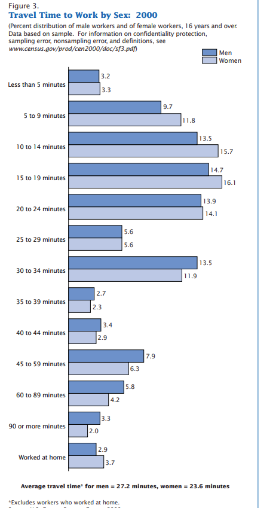

Topics
Descriptive Statistics
Measures of Central Tendency
Mean
Median
Mode
Measures of Dispersion
Variance
Standard Deviation
Range
Data Summarization Tools
Histograms
Box Plots
Whisker Plots
Probability Distributions
Probability Density Function (PDF)
Cumulative Distribution Function (CDF)
Gaussian Distribution
Log Normal Distribution
Binomial Distribution
Bernoulli Distribution
Pareto Distribution (Power Law Distribution)
Standard Normal Distribution
Statistical Transformation Techniques
Standardization
Q-Q Plot Analysis
Inferential Statistics
Hypothesis Testing
Null Hypothesis
Alternative Hypothesis
Statistical Tests
Z-test
T-test
ANOVA (Analysis of Variance)
F-test
Factorial ANOVA
Chi-square test
P-values
Confidence Intervals
Statistical Tables
Z-tables
T-tables
Chi-square tables
Sampling Techniques
Simple Random Sampling
Stratified Sampling
Systematic Sampling
Convenience Sampling
Applications and Examples
Exit Poll Analysis
Household Surveys
Drug Testing Sampling Strategies
Foundational Descriptive Statistics#
Descriptive statistics is the branch of statistics that deals with summarizing and describing the main features of a dataset. These summaries can be numerical (e.g., averages, variability) or visual (e.g., graphs and plots). Below, we will study its core concepts in four thematic groups.
1. Measures of Central Tendency#
These metrics describe the center or typical value in a dataset.
📌 Mean (Arithmetic Average)#
Definition: The sum of all values divided by the number of values.
Formula:
Interpretation: The mean represents a balanced point of the data, much like the center of mass.
Example (Education): A student scores 60, 70, 80 on three exams. The mean score = (60 + 70 + 80) / 3 = 70.
📌 Median#
Definition: The middle value when the data are sorted in order.
Interpretation: It divides the data into two equal halves and is not affected by extreme values (outliers).
Example (Health): The waiting times (in minutes) at a clinic: 5, 7, 10, 12, 60. Median = 10 (middle value), not distorted by 60.
📌 Mode#
Definition: The most frequently occurring value(s) in a dataset.
Interpretation: Useful for categorical data or understanding common outcomes.
Example (Retail): In a clothing store, the most sold shirt size is M. Hence, the mode = M.
2. Measures of Dispersion#
These statistics describe how spread out or varied the data are.
📌 Range#
Definition: The difference between the maximum and minimum values.
Formula:
Interpretation: Gives a quick sense of total variability but is sensitive to outliers.
Example (Sports): If the scores in a basketball game are from 45 to 98, then the range = 98 - 45 = 53 points.
📌 Variance#
Definition: The average of the squared differences from the mean.
Formula (Sample):
Interpretation: Indicates the average spread, but in squared units. A higher variance indicates more spread in the data.
Example (Finance): If daily returns on a stock fluctuate greatly, the variance will be high, indicating high risk.
Combined Insight:#
Together, these two sets of metrics give a comprehensive summary of your dataset:
Central tendency tells you where the data is centered.
Dispersion tells you how tight or spread out that data is.
📌 Standard Deviation#
Definition: The square root of the variance.
Formula:
Interpretation: Describes typical distance of data points from the mean, in the original units.
Example (Health): If the average blood pressure is 120 mmHg and SD = 10, then most patients fall within 110–130 mmHg.
📌 Interquartile Range (IQR)#
Definition: The difference between the 75th percentile (Q3) and the 25th percentile (Q1).
Formula:
Interpretation: Measures the middle 50% spread of data. Robust to outliers.
Example (Education): SAT scores: Q1 = 1050, Q3 = 1250 → IQR = 200. Middle students scored between 1050 and 1250.
3. Shape of the Distribution#
These metrics describe the form or symmetry of data distributions.
📌 Skewness#
Definition: A measure of asymmetry in the distribution.
Skewness > 0: Right-skewed (tail on the right).
Skewness < 0: Left-skewed (tail on the left).
Skewness ≈ 0: Symmetric (like normal distribution).
Example (Income): Most people earn average incomes, but a few earn very high amounts. → Income data is right-skewed.
📌 Kurtosis#
Definition: Measures the tailedness or peakedness of a distribution.
High kurtosis: More extreme outliers (leptokurtic).
Low kurtosis: Flatter, fewer outliers (platykurtic).
Normal distribution has kurtosis = 3.
Example (Finance): Stock returns often have high kurtosis, indicating frequent extreme gains/losses.
4. Data Visualization Techniques#
📊 Histograms#
Definition: A histogram is a type of bar graph that displays the distribution of continuous numerical data by grouping values into bins (intervals).
Interpretation:
Height of each bar shows the frequency of observations within that interval.
Helps identify the shape of the distribution (e.g., normal, skewed).
Unlike bar charts, there are no gaps between the bars.
Example (Health): Suppose a hospital records the ages of 1,000 patients. A histogram can show how many patients fall within each age bracket (e.g., 0–10, 11–20, …). This helps in allocating resources for pediatric, adult, or geriatric care.
import numpy as np
import seaborn as sns
import matplotlib.pyplot as plt
# Simulate age data
np.random.seed(42)
ages = np.random.normal(loc=40, scale=12, size=1000)
# Histogram
plt.figure(figsize=(8, 4))
sns.histplot(ages, bins=20, kde=False, color='skyblue')
plt.title("Histogram of Patient Ages")
plt.xlabel("Age")
plt.ylabel("Frequency")
plt.grid(True)
plt.show()
What it shows: Distribution of a continuous variable (e.g., student exam scores).
What to look for:
Shape of the distribution (symmetric, skewed, bimodal).
Center around the mean.
Spread (standard deviation).
📝 Conclusion:
This histogram reveals that the patient age distribution is centered around 40 years with a moderate spread, consistent with a normal distribution. It is useful for identifying the most common age group, understanding variability, and planning age-specific healthcare services—for instance, prioritizing adult care over pediatric or geriatric services in this population.
📦 Box Plots (Box-and-Whisker Plots)#
Definition: A box plot summarizes a dataset using five-number summary: minimum, first quartile (Q1), median (Q2), third quartile (Q3), and maximum.
Interpretation:
Box represents the interquartile range (IQR) (middle 50%).
A line inside the box shows the median.
Whiskers extend to data within 1.5×IQR from Q1 and Q3; points beyond are outliers.
Example (Education): An instructor wants to compare exam scores across two sections. Box plots can reveal which class performed better, had more variation, or contained outliers (e.g., students who scored exceptionally low or high).
import pandas as pd
# Simulated exam scores for two sections
data = pd.DataFrame({
'Section A': np.random.normal(70, 10, 100),
'Section B': np.random.normal(75, 15, 100)
})
# Melt for seaborn
data_melted = data.melt(var_name="Section", value_name="Score")
plt.figure(figsize=(6, 4))
sns.boxplot(x="Section", y="Score", data=data_melted)
plt.title("Box Plot of Exam Scores")
plt.show()
What it shows: Summary of distribution, including median, quartiles, and outliers.
What to look for:
Length of box (IQR).
Position of median.
Whiskers and individual outliers.
📝 Conclusion:
The box plot of monthly sales reveals a right-skewed distribution, with a longer upper whisker and visible outliers above the upper quartile. The median lies closer to the lower quartile, indicating a small number of stores are making significantly higher sales, likely outliers. Most stores operate within a moderate range.
Here’s the observation and conclusion for the box plot generated by your code:
📦 Box Plot of Exam Scores – Section A vs. Section B#
🔍 Observation:#
Section A has a median score around 70, with a relatively tight interquartile range (IQR), indicating consistent scores.
Section B has a higher median, approximately 75, and a wider spread, suggesting more variability in scores.
Section B also shows longer whiskers and possibly outliers, meaning a few students scored much higher or lower than the rest.
✅ Conclusion:#
The box plot shows that Section B has a higher overall performance than Section A, as indicated by the median. However, the wider spread and presence of outliers suggest that scores are less consistent in Section B. In contrast, Section A demonstrates more consistent performance but lower average scores. This makes box plots an effective tool for quickly comparing central tendency, variability, and outliers between groups.
Let me know if you’d like to add a violin plot or swarm plot for further visual insight!
🌊 Density Plot#
Concept Recap: A smoothed version of a histogram, useful for identifying peaks and modality.
Example: Distribution of daily sales revenue.
# Simulate daily sales data
sales = np.random.normal(loc=5000, scale=1500, size=200)
plt.figure(figsize=(8, 4))
sns.kdeplot(sales, fill=True, color='green')
plt.title("Density Plot of Daily Sales")
plt.xlabel("Sales Amount")
plt.show()
Here’s the observation and conclusion for the density plot of daily sales:
🌊 Density Plot of Daily Sales#
🔍 Observation:#
The curve is smooth and unimodal, peaking around ₹5,000, which aligns with the mean of the simulated data (
loc=5000).The shape is fairly symmetrical, indicating that most daily sales cluster around the average.
The spread suggests that daily sales typically range between ₹2,000 and ₹8,000, with extreme values being rare.
There are no sharp discontinuities or multiple peaks, which means the data lacks subgroups or irregular fluctuations.
✅ Conclusion:#
The density plot shows that most daily sales are concentrated around ₹5,000, with a balanced distribution on either side. This smooth curve provides a clearer view of the sales distribution than a histogram, helping business analysts detect central tendencies, variability, and potential skewness. Such insights can guide inventory planning, revenue forecasting, or staff allocation on high-sales days.
Would you like to overlay a histogram on top of the KDE plot for comparison?
🎻 Violin Plot#
Concept Recap: Combines box plot and density plot.
Example: Compare player points per game across three teams.
teams = ['Team A', 'Team B', 'Team C']
data = pd.DataFrame({
'Team': np.random.choice(teams, 300),
'Points': np.concatenate([
np.random.normal(15, 3, 100),
np.random.normal(20, 4, 100),
np.random.normal(25, 5, 100)
])
})
plt.figure(figsize=(8, 4))
sns.violinplot(x="Team", y="Points", data=data)
plt.title("Violin Plot of Player Points per Game")
plt.show()
Here’s the observation and conclusion for the violin plot of player points per game across teams:
🎻 Violin Plot of Player Points per Game#
🔍 Observation:#
Team A shows a tighter, symmetric distribution centered around 15 points, indicating consistent performance.
Team B has a wider distribution with moderate variability centered around 20 points.
Team C displays the widest and most spread-out distribution, peaking around 25 points, but with greater variability, including a longer tail toward lower scores.
The internal box plot indicates median values increase from Team A to Team C.
✅ Conclusion:#
This violin plot reveals that while Team C has the highest median performance, it also shows the greatest variability, suggesting inconsistent individual scores. Team A is the most consistent, with tightly grouped scores around the median. Team B lies in between, with moderate performance and spread. Violin plots effectively highlight both summary statistics and distribution shape, making them ideal for comparing performance across multiple groups with varying score ranges and densities.
Would you like to overlay individual data points (e.g., swarm or strip plot) for better granularity?
📊 Bar Charts / Pie Charts#
Use: For categorical data.
Bar Chart: Shows frequencies as separate bars. Pie Chart: Shows proportions as sectors of a circle.
Example (Marketing): Bar chart of customer gender preference: 60% Female, 40% Male.
parties = np.random.choice(['Party A', 'Party B', 'Party C'], 300)
plt.figure(figsize=(6, 4))
sns.countplot(x=parties, palette='Set2')
plt.title("Bar Chart of Voter Preferences")
plt.xlabel("Political Party")
plt.ylabel("Number of Respondents")
plt.show()
📊 Bar Chart: Voter Preferences by Political Party#
🔍 Observation:#
Each bar height represents the number of respondents per political party.
One party likely has noticeably higher support, suggesting dominant preference.
✅ Conclusion:#
The bar chart visually compares category sizes (political party preference). It’s useful for polling results, survey analysis, or any context where ranking by frequency is needed.
⚫ Scatter Plots#
Use: Shows relationship between two numerical variables.
Interpretation: Reveals correlation, trend direction, and outliers.
Example (Health): Scatter plot of age vs. cholesterol level can help identify positive correlation in older adults.
bmi = np.random.normal(25, 4, 200)
bp = 80 + (bmi * 1.5) + np.random.normal(0, 10, 200)
plt.figure(figsize=(6, 4))
sns.scatterplot(x=bmi, y=bp)
plt.title("Scatter Plot: BMI vs Blood Pressure")
plt.xlabel("BMI")
plt.ylabel("Blood Pressure (mm Hg)")
plt.show()
⚪ Scatter Plot: BMI vs Blood Pressure#
🔍 Observation:#
There’s a positive linear relationship: as BMI increases, blood pressure tends to rise.
The points are somewhat spread, indicating moderate variability due to the added noise.
✅ Conclusion:#
The scatter plot shows a direct association between BMI and blood pressure. It helps reveal correlation patterns, clusters, and potential outliers, making it ideal for exploring health-related risk factors or predictive relationships in data.
🔁 Pair Plot#
Definition: Matrix of scatter plots showing pairwise relationships among variables.
Example (Education): Students’ performance across subjects.
✅ Conclusion:#
Pair plots are excellent for spotting correlations (e.g., if students strong in Math are also strong in Science) and identifying multivariate outliers.
scores = pd.DataFrame({
'Math': np.random.normal(80, 10, 100),
'Science': np.random.normal(75, 12, 100),
'Reading': np.random.normal(78, 8, 100)
})
sns.pairplot(scores)
plt.suptitle("Pair Plot of Academic Scores", y=1.02)
plt.show()
🔁 Pair Plot: Academic Scores (Math, Science, Reading)#
🔍 Observation:#
Diagonal plots show individual subject distributions (histograms).
Off-diagonal scatter plots reveal mild positive correlations between subjects—especially between Math and Science.
Most data points cluster in the upper score range (70–90).
✅ Conclusion:#
The pair plot is a compact way to explore relationships across multiple variables. It shows that students scoring high in one subject tend to perform well in others. Use it for multivariate exploratory analysis, especially in education or psychometric data.
✅ Summary Table of Observations#
Plot Type |
Key Observation |
Implication |
|---|---|---|
Histogram |
Scores follow normal distribution |
Use parametric stats (mean, SD) safely |
Box Plot |
Sales are right-skewed with outliers |
Investigate top performers or anomalies |
Bar Chart |
Females are majority customers |
Tailor services/products accordingly |
Pie Chart |
Confirms female customer dominance |
Supports bar chart analysis |
Scatter Plot |
Positive trend between age and cholesterol |
Older customers may need health screening focus |
Tool |
Best For |
Key Insight/Use |
|---|---|---|
Histogram |
Numeric distributions |
See shape, central tendency, spread |
Box Plot |
Outlier detection, comparison |
Spot outliers and compare medians |
Density Plot |
Smooth distribution visualization |
See modality and skewness |
Violin Plot |
Distribution + summary |
Compare full distribution across groups |
Scatter Plot |
Relationships between 2 variables |
Detect linear trend or clusters |
Pair Plot |
Multivariate relationships |
Reveal variable interactions |
Frequency Table |
Categorical count summary |
Text-based overview of popularity |
Bar Chart |
Categorical frequency |
Compare categories directly |
Pie Chart |
Proportional representation |
Visualize percentage shares |
💡 Tips for Reporting Conclusions#
When presenting your findings, follow this structure:
Observation → Interpretation → Recommendation
Example:
“The histogram of exam scores shows a symmetric distribution centered at 70, suggesting consistent academic performance. This supports using the mean as a reliable central measure. No significant intervention needed.”
Questionaire - Click Here
Source : Journey to work

1. What is an appropriate way to visualize a list of the eye colors of 120 people?#
Select all that apply.*
Pie chart
Dot plot
Box plot
✅ Show Answer & Explanation
Correct Answers: Pie chart, Dot plot
Explanation: Eye color is categorical data. Pie charts and dot plots are appropriate. Box plots are used for numerical data.
2. According to the histogram of travel times to work from the US 2000 census, roughly what percentage of commuters travel more than 45 minutes?#
Answer: 15
✅ Show Answer & Explanation
Explanation: Approximately 14.75% of commuters travel more than 45 minutes. Rounded, this becomes 15%.
3. Approximately what is the median travel time, in minutes?#
Answer: 22
✅ Show Answer & Explanation
Explanation: The 50th percentile (median) falls in the 20–24 minute bin. The midpoint of this range is 22.
4. Which summary measure would you use to compare household incomes between California and Massachusetts?#
Median household income
3rd quartile of household income
Mean household income
✅ Show Answer & Explanation
Correct Answer: Median household income
Explanation: Median is robust to outliers, which are common in income data. Mean can be skewed by extreme values.
5. If all household incomes increase by 5%, how does the mean change?#
Cannot be determined from the information given
The mean household income goes up by 5%
The mean household income doesn’t change
✅ Show Answer & Explanation
Correct Answer: The mean household income goes up by 5%
Explanation: Scaling every value by 1.05 scales the mean by the same factor.
6. How does the median change if all incomes increase by 5%?#
Median household income goes up by 5%
The median household income doesn’t change
Cannot be determined from the information given
✅ Show Answer & Explanation
Correct Answer: Median household income goes up by 5%
Explanation: Like the mean, the median also scales proportionally when every value is increased by 5%.
7. How does the standard deviation change if all incomes increase by 5%?#
The standard deviation doesn’t change
The standard deviation goes up by 5%
Cannot be determined from the information given
✅ Show Answer & Explanation
Correct Answer: The standard deviation goes up by 5%
Explanation: Standard deviation scales when all data are multiplied by a constant.
8. How does the interquartile range change if all incomes increase by 5%?#
The IQR doesn’t change
The IQR goes up by 5%
Cannot be determined from the information given
✅ Show Answer & Explanation
Correct Answer: The IQR goes up by 5%
Explanation: IQR measures spread; scaling by 5% increases the IQR by 5%.
9. How does the mean change if all incomes increase by $5,000?#
The mean doesn’t change
The mean goes up by $5,000
Cannot be determined from the information given
✅ Show Answer & Explanation
Correct Answer: The mean goes up by $5,000
Explanation: Adding a constant to all data points shifts the mean by the same constant.
10. How does the median change if all incomes increase by $5,000?#
The median goes up by $5,000
The median doesn’t change
Cannot be determined from the information given
✅ Show Answer & Explanation
Correct Answer: The median goes up by $5,000
Explanation: Like the mean, the median increases by a constant when all values are increased equally.
11. How does the standard deviation change if all incomes increase by $5,000?#
The standard deviation goes up by $5,000
The standard deviation doesn’t change
Cannot be determined from the information given
✅ Show Answer & Explanation
Correct Answer: The standard deviation doesn’t change
Explanation: SD measures spread, not location. Adding a constant doesn’t affect spread.
12. How does the interquartile range change if all incomes increase by $5,000?#
Cannot be determined from the information given
The IQR doesn’t change
The IQR goes up by $5,000
✅ Show Answer & Explanation
Correct Answer: The IQR doesn’t change
Explanation: Adding a constant to every value shifts the entire distribution, but doesn’t change spread (IQR).
13. The median house price is $342,000. What percentage of homes sold for more than that?#
More than 50%
Exactly 50%
Less than 50%
✅ Show Answer & Explanation
Correct Answer: Less than 50%
Explanation: If $342,000 is the median, then at most 50% of homes sold for more than that — sometimes less than 50% if there are repeated values at the median.
🎓 Topic: Understanding the Shape of a Distribution#
1. 📌 What Do We Mean by “Shape of a Distribution”?#
Imagine you collect a bunch of numbers—say, the heights of students in a class or daily temperatures over a month—and you plot them on a graph like a histogram.
The shape of the distribution is simply the pattern that forms when you stack those numbers. It’s like asking:
“How do the values spread out? Are they piled in the center? Leaning to one side? Do we have multiple peaks?”
The shape gives you a visual summary of your data.
2. 🔄 Main Types of Distribution Shapes#
Let’s go through the key types you’ll see often:
🟢 a) Symmetric Distribution (also called “normal” or bell-shaped)#
Looks like a hill or a bell 🛎️.
The left and right sides mirror each other.
Mean = Median = Mode, all in the center.
Example: Heights of adults, test scores in large populations.
Imagine a bell lying on its side—most values are in the center, fewer at the ends.
# Symmetric Distribution (Discrete + KDE)
data = np.random.normal(loc=10, scale=2, size=1000).round().astype(int)
plt.figure(figsize=(8, 5))
sns.histplot(data, bins=range(min(data), max(data) + 1), stat="density", color="skyblue", alpha=0.6)
sns.kdeplot(data, bw_adjust=1, color="black")
mean, median, mode = np.mean(data), np.median(data), stats.mode(data, keepdims=True)[0][0]
plt.axvline(mean, color='red', linestyle='--', label='Mean')
plt.axvline(median, color='green', linestyle='--', label='Median')
plt.axvline(mode, color='orange', linestyle='--', label='Mode')
plt.title("1️⃣ Symmetric Distribution (Discrete + KDE)")
plt.xlabel("Value")
plt.ylabel("Density")
plt.legend()
plt.show()
c:\Users\sangouda\AppData\Local\anaconda3\Lib\site-packages\IPython\core\pylabtools.py:170: UserWarning:
Glyph 65039 (\N{VARIATION SELECTOR-16}) missing from font(s) Arial.
c:\Users\sangouda\AppData\Local\anaconda3\Lib\site-packages\IPython\core\pylabtools.py:170: UserWarning:
Glyph 8419 (\N{COMBINING ENCLOSING KEYCAP}) missing from font(s) Arial.
🔵 b) Right-Skewed (Positively Skewed)#
Tail is longer on the right (higher values).
Mean is greater than median.
Example: Salaries in a company (a few very high earners pull the mean up).
Like a hill sliding down slowly to the right 📈.
# Right-Skewed Distribution (Discrete + KDE)
import warnings
warnings.filterwarnings('ignore')
data = np.random.geometric(p=0.25, size=1000)
plt.figure(figsize=(8, 5))
sns.histplot(data, bins=range(min(data), max(data) + 1), stat="density", color="salmon", alpha=0.6)
sns.kdeplot(data, bw_adjust=1, color="black")
mean, median, mode = np.mean(data), np.median(data), stats.mode(data, keepdims=True)[0][0]
plt.axvline(mean, color='red', linestyle='--', label='Mean')
plt.axvline(median, color='green', linestyle='--', label='Median')
plt.axvline(mode, color='orange', linestyle='--', label='Mode')
plt.title("2️⃣ Right-Skewed Distribution (Discrete + KDE)")
plt.xlabel("Value")
plt.ylabel("Density")
plt.legend()
plt.show()
🔴 c) Left-Skewed (Negatively Skewed)#
Tail is longer on the left (lower values).
Mean is less than median.
Example: Age at retirement (most people retire at a similar age, but a few retire early).
Like a hill leaning toward the left 📉.
# Left-Skewed Distribution (Discrete + KDE)
data = 30 - np.random.geometric(p=0.25, size=1000)
plt.figure(figsize=(8, 5))
sns.histplot(data, bins=range(min(data), max(data) + 1), stat="density", color="lightgreen", alpha=0.6)
sns.kdeplot(data, bw_adjust=1, color="black")
mean, median, mode = np.mean(data), np.median(data), stats.mode(data, keepdims=True)[0][0]
plt.axvline(mean, color='red', linestyle='--', label='Mean')
plt.axvline(median, color='green', linestyle='--', label='Median')
plt.axvline(mode, color='orange', linestyle='--', label='Mode')
plt.title("3️⃣ Left-Skewed Distribution (Discrete + KDE)")
plt.xlabel("Value")
plt.ylabel("Density")
plt.legend()
plt.show()
🟡 d) Uniform Distribution#
All bars are roughly the same height.
No clear peak; values are evenly spread.
Example: Rolling a fair die, where each number is equally likely.
Think of a flat plateau or a brick wall 🧱.
# Uniform Distribution (Discrete + KDE)
data = np.random.randint(1, 11, size=1000)
plt.figure(figsize=(8, 5))
sns.histplot(data, bins=range(min(data), max(data) + 1), stat="density", color="gold", alpha=0.6)
sns.kdeplot(data, bw_adjust=1, color="black")
mean, median, mode = np.mean(data), np.median(data), stats.mode(data, keepdims=True)[0][0]
plt.axvline(mean, color='red', linestyle='--', label='Mean')
plt.axvline(median, color='green', linestyle='--', label='Median')
plt.axvline(mode, color='orange', linestyle='--', label='Mode')
plt.title("4️⃣ Uniform Distribution (Discrete + KDE)")
plt.xlabel("Value")
plt.ylabel("Density")
plt.legend()
plt.show()
🟠 e) Bimodal Distribution#
Has two peaks or “humps”.
Suggests two different groups or processes in the data.
Example: Heights in a mixed group of adults and children, or test scores where some studied and some didn’t.
Picture a camel’s back 🐫 – two humps, not one!
# Bimodal Distribution (Discrete + KDE)
group1 = np.random.normal(loc=5, scale=1, size=500).round().astype(int)
group2 = np.random.normal(loc=15, scale=1, size=500).round().astype(int)
data = np.concatenate([group1, group2])
plt.figure(figsize=(8, 5))
sns.histplot(data, bins=range(min(data), max(data) + 1), stat="density", color="violet", alpha=0.6)
sns.kdeplot(data, bw_adjust=1, color="black")
mean, median, mode = np.mean(data), np.median(data), stats.mode(data, keepdims=True)[0][0]
plt.axvline(mean, color='red', linestyle='--', label='Mean')
plt.axvline(median, color='green', linestyle='--', label='Median')
plt.axvline(mode, color='orange', linestyle='--', label='Mode')
plt.title("5️⃣ Bimodal Distribution (Discrete + KDE)")
plt.xlabel("Value")
plt.ylabel("Density")
plt.legend()
plt.show()
3. 🧠 How Can You Spot These Shapes?#
Use histograms or density plots.
Symmetric → bell-shaped.
Skewed → tail stretches left or right.
Uniform → all bars even.
Bimodal → two bumps.
➡️ You don’t need to calculate to spot the shape. A quick look at a histogram is often enough!
4. ✅ Why Does the Shape Matter in Data Analysis?#
Because the shape affects everything we do with data:
Shape |
Why It Matters |
|---|---|
Skewed |
Mean gets pulled; use median instead for center. |
Symmetric (Normal) |
Many statistical tools (like z-scores, t-tests) assume normality. |
Bimodal |
You might have two different groups hiding in your data. |
Uniform |
Suggests randomness or lack of structure. |
📊 Think of the shape as the personality of your data—it tells you how to treat it.
✨ Analogy to Wrap It Up#
Imagine you’re looking at a crowd of people from a balcony.
If most people are clustered in the middle: symmetric.
If they’re mostly to one side: skewed.
If they’re evenly spread: uniform.
If there are two groups talking in corners: bimodal.
Understanding shape is like seeing the story behind the numbers.
🎯 Summary#
Distribution shape tells us how data is spread.
Main types: symmetric, skewed (left/right), uniform, bimodal.
Use histograms or density plots to visualize shape.
It guides us in choosing the right summary measures and statistical methods.

Tool |
Type |
Best For |
Example Context |
|---|---|---|---|
Histogram |
Numerical |
Distribution shape |
Age of patients |
Box Plot |
Numerical |
Median, IQR, outliers |
Exam scores |
Density Plot |
Numerical |
Smooth distribution estimate |
Daily sales |
Violin Plot |
Numerical |
Distribution + box plot |
Player performance |
Scatter Plot |
Bivariate numeric |
Relationships between two variables |
BMI vs. blood pressure |
Pair Plot |
Multivariate |
Exploring all variable relationships |
Student academic scores |
Frequency Table |
Categorical |
Counts of categories |
Payment methods |
Bar Chart |
Categorical |
Frequency/proportion comparison |
Political party preference |
Pie Chart |
Categorical |
Visualizing proportions of a whole |
Majors of students |
📌 Why Do We Divide by (n – 1) for Sample Variance?#
✅ Key Reason:#
We divide by n – 1 instead of n to get an unbiased estimate of the population variance — this is called Bessel’s Correction.
🔍 What’s Happening:#
Population variance uses the true mean \(\mu\) and divides by N.
Sample variance uses the sample mean \(\bar{x}\), which underestimates variability.
Dividing by (n – 1) corrects this bias.
📊 Why (n – 1)?#
Using the sample mean costs you 1 degree of freedom.
(n – 1) adjusts for that, giving a better estimate of how spread out the full population is.
🎓 Bottom Line:#
Use n – 1 for sample variance so your estimate of the population variance is accurate on average — not too low.
Understanding Covariance and Correlation#
Covariance and correlation are fundamental statistical measures used to quantify the relationship between two continuous variables. They help us understand how changes in one variable are associated with changes in another.
Covariance#
Covariance measures how much two random variables change together.
Positive Covariance: Indicates that if one variable tends to increase, the other also tends to increase, and vice-versa (they move in the same direction).
Negative Covariance: Indicates that if one variable tends to increase, the other tends to decrease, and vice-versa (they move in opposite directions).
Formula (Sample Covariance): $\(\text{Cov}(X, Y) = \frac{\sum_{i=1}^{n} (X_i - \bar{X})(Y_i - \bar{Y})}{n-1}\)$ Where:
\(X_i\) and \(Y_i\) are individual data points for variables X and Y.
\(\bar{X}\) and \(\bar{Y}\) are the sample means of X and Y, respectively.
\(n\) is the number of data points.
Relationship with Variance: \(\text{Cov}(X, X) = \text{Var}(X)\). This shows that variance is essentially the covariance of a variable with itself, indicating its spread.
Disadvantage: Covariance does not have a standardized limit. Its value can range from \(-\infty\) to \(+\infty\), making it difficult to compare the strength of relationships across different pairs of variables or datasets. For example, a covariance of +20 doesn’t inherently tell us if the relationship is “stronger” than a covariance of +5, as the scale depends on the magnitudes of the variables themselves.
Correlation#
Correlation addresses the limitations of covariance by providing a standardized measure of the strength and direction of the linear relationship between two variables. Its value is always limited, typically between -1 and +1.
Pearson Correlation Coefficient#
The Pearson Correlation Coefficient (often denoted as \(\rho\) for population or \(r\) for sample) measures the strength and direction of a linear relationship between two continuous variables.
Formula: $\(r = \frac{\text{Cov}(X, Y)}{\sigma_X \sigma_Y}\)$ Where:
\(\text{Cov}(X, Y)\) is the covariance between X and Y.
\(\sigma_X\) is the standard deviation of X.
\(\sigma_Y\) is the standard deviation of Y.
Interpretation of Values:
+1: Perfect positive linear relationship (as one variable increases, the other increases proportionally).
-1: Perfect negative linear relationship (as one variable increases, the other decreases proportionally).
0: No linear relationship.
Values closer to +1 or -1: Indicate a stronger linear relationship.
Values closer to 0: Indicate a weaker linear relationship.
Advantage: The standardized range of -1 to +1 makes it easy to compare the strength of relationships between different pairs of variables. For example, a correlation of 0.98 signifies a very strong positive linear relationship, while 0.50 indicates a moderate one.
Limitation: Pearson correlation primarily captures linear relationships. If the relationship between variables is non-linear (e.g., curved), Pearson correlation might underestimate the true association, even if a strong non-linear pattern exists.
Spearman Rank Correlation#
The Spearman Rank Correlation Coefficient (often denoted as \(r_s\)) measures the strength and direction of a monotonic relationship between two continuous or ordinal variables. It assesses how well the relationship between two variables can be described using a monotonic function (either consistently increasing or consistently decreasing, but not necessarily at a constant rate).
How it Works: Instead of using the raw data values, Spearman correlation calculates the Pearson correlation coefficient on the ranks of the data. This means that instead of the actual values, their positions (ranks) in sorted order are used for the calculation.
Formula: Similar to Pearson, but applied to ranks: $\(r_s = \frac{\text{Cov}(\text{rank}(X), \text{rank}(Y))}{\sigma_{\text{rank}(X)} \sigma_{\text{rank}(Y)}}\)$
Advantage: Spearman correlation is robust to outliers and can capture non-linear but monotonic relationships that Pearson correlation might miss or underestimate. For instance, if one variable consistently increases as the other increases, even if the rate of increase varies, Spearman correlation will tend towards +1.
Use Case: Ideal when you suspect a relationship that is not strictly linear but consistently moves in one direction.
Use Cases in Data Science#
Covariance and correlation are invaluable tools for data scientists and analysts, especially in:
Exploratory Data Analysis (EDA):
Understanding Feature Relationships: Identifying how different features in a dataset relate to each other.
Identifying Multicollinearity: Detecting if independent variables in a regression model are highly correlated, which can cause issues in model interpretation and stability.
Feature Engineering/Selection:
Identifying Predictive Features: Determining which features have a strong relationship with the target variable (the variable you want to predict). Highly correlated features with the target variable are often good candidates for inclusion in a model.
Reducing Redundancy: If two features are highly correlated with each other, one might be redundant and can potentially be removed to simplify the model and prevent overfitting.
Real-World Examples:
House Price Prediction: As you demonstrated, features like “size of house,” “number of rooms,” and “location” are likely to be positively correlated with “price.”
Negative Correlation Example: A feature like “house is haunted” would likely show a negative correlation with “price,” indicating that if the house is haunted, its price tends to decrease.
By understanding and applying these concepts, data professionals can gain deeper insights into their data and build more effective machine learning models.